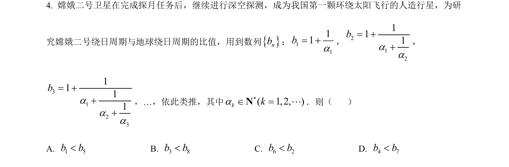
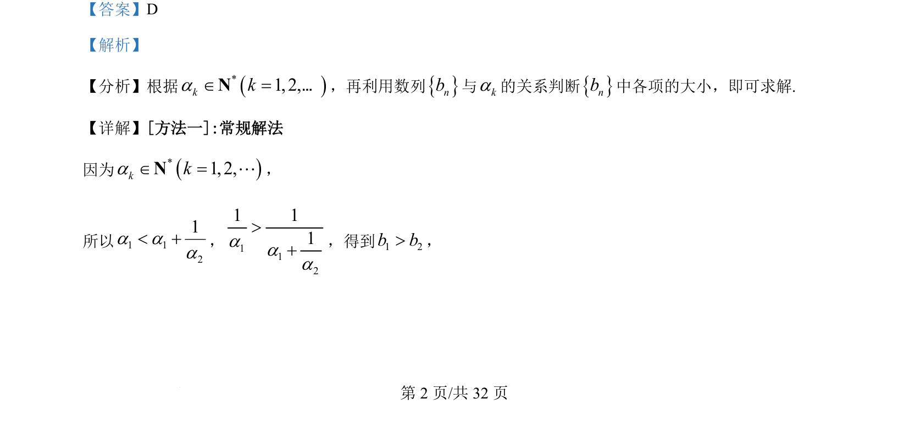
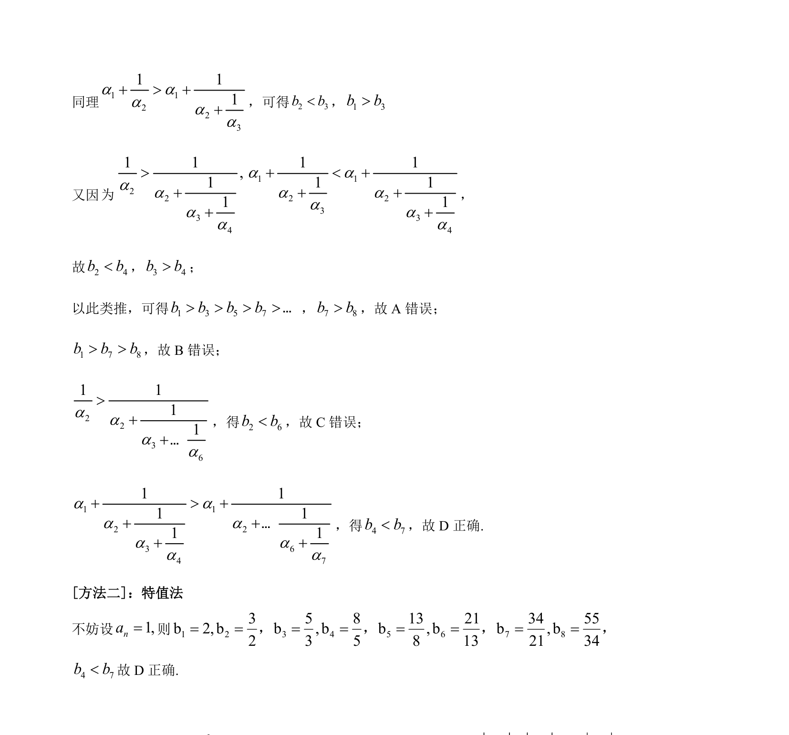

考点：数列单调性 比较大小 递推关系 特殊值法

本题通过数列递推关系比较各项大小，考查逻辑推理与特值验证能力。


📄 原 PDF 第 2 页：
素材/真题/吉林/2008-2024·（吉林）数学高考真题/2022年高考数学试卷（理）（全国乙卷）（解析卷）.pdf
【答案】D 【解析】 【分析】根据()1, 2,kkaÎ =N…，再利用数列{}nb与ka的关系判断{}nb中各项的大小，即可求解. 【详解】[方法一]:常规解法 因为()1, 2,kkaÎ =NL， 所以1 121a aa<+，1121 11aaa>+，得到1 2b b>，